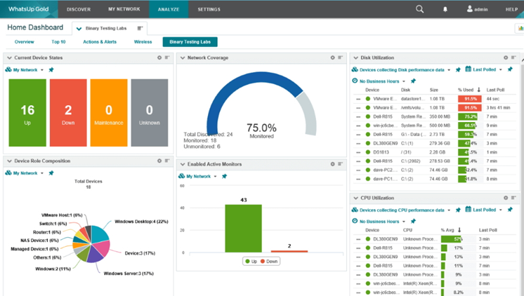

¿Qué es el Monitoreo de Servidores?
El monitoreo de servidores es el proceso de supervisar continuamente el rendimiento, la disponibilidad y la integridad de los servidores de una red. Este proceso asegura que los servicios cruciales estén funcionando correctamente, detecta problemas antes de que se conviertan en incidentes mayores y permite tomar decisiones informadas.
Componentes Clave del Monitoreo
- Métricas de rendimiento: CPU, memoria, uso del disco, y latencia.
- Disponibilidad: Supervisión de tiempo de actividad y respuestas de los servicios.
- Alertas: Notificaciones cuando los parámetros exceden los umbrales establecidos.
Herramientas Populares de Monitoreo
Existen varias herramientas que facilitan el monitoreo de servidores, entre ellas:
1. Nagios: Sistema de monitoreo de código abierto que permite supervisar aplicaciones y servicios.
2. Zabbix: Ideal para entornos empresariales, ofrece una amplia gama de funcionalidades.
3. Prometheus: Diseñado para monitoreo de aplicaciones modernas en la nube.
Beneficios del Monitoreo
Prevención de fallas: Detección temprana de problemas.
Mejora del rendimiento: Identificación de cuellos de botella y áreas de mejora.
Soporte proactivo: Reducción del tiempo de inactividad y mayor satisfacción del usuario.
Ejemplo visual
Espacio para video
Aquí puedes incluir un video explicativo sobre herramientas de monitoreo: